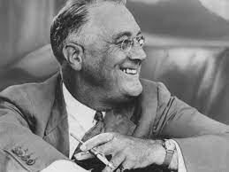
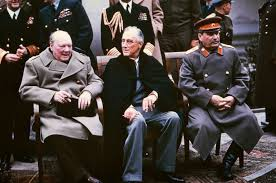

Franklin D. Roosevelt



I am talking about how Franklin D. Roosevelt was one of the best presidents
Franklin D. Roosevelt was know for getting america out of the great deppression in 1929 and he made the New Deal program which was a way to evolve; it included union protection programs, the Social Security Act, and programs to aid tenant farmers and migrant workers. Many of the New Deal acts or agencies came to be known by their acronyms. He was also the president during WW2 and made the decision to have America go war after we had been attacked by Japan and Germany declaring war on us. He was also the one who approved dropping atomic bombs on japan in order to save thousands of American lives from being killed trying to storm Japans mainland.